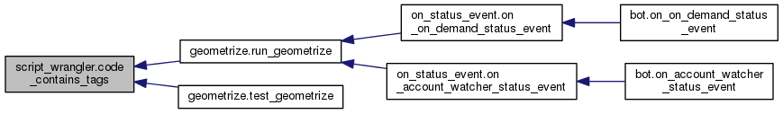
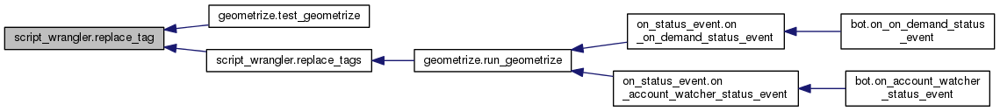
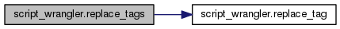
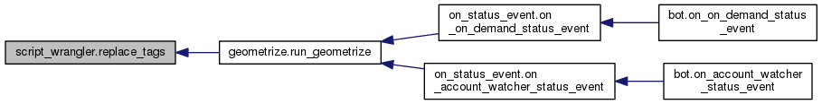

|
GeometrizeTwitterBot
1.0
Python Twitter bot for geometrizing images into geometric primitives
|
|
GeometrizeTwitterBot
1.0
Python Twitter bot for geometrizing images into geometric primitives
|
This module contains code that manipulates ChaiScript template scripts before they can be executed by Geometrize. More...
Functions | |
| def | replace_tag |
| Replaces all instances of a template ::TAG:: in the given code with the given value. More... | |
| def | replace_tags |
| Replaces all instances of template ::TAG::s in the code from the given dictionary with their corresponding values. More... | |
| def | find_tags |
| Returns a set of all the template ::TAG::s found in the given code. More... | |
| def | code_contains_tags |
| Returns true if the given code contains any ::TAG::s, else false. More... | |
This module contains code that manipulates ChaiScript template scripts before they can be executed by Geometrize.
The main purpose is to find and replace tags in scripts e.g. ::IMAGE_INPUT_PATH:: to "path/to/image.png"
| def script_wrangler.code_contains_tags | ( | code | ) |
Returns true if the given code contains any ::TAG::s, else false.

| def script_wrangler.find_tags | ( | code | ) |
Returns a set of all the template ::TAG::s found in the given code.
| def script_wrangler.replace_tag | ( | code, | |
| tag, | |||
| value | |||
| ) |
Replaces all instances of a template ::TAG:: in the given code with the given value.

| def script_wrangler.replace_tags | ( | code, | |
| dict | |||
| ) |
Replaces all instances of template ::TAG::s in the code from the given dictionary with their corresponding values.


 1.8.6
1.8.6